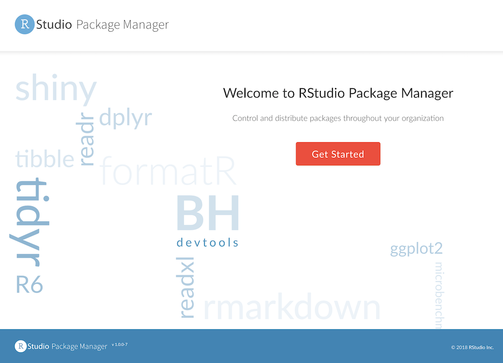
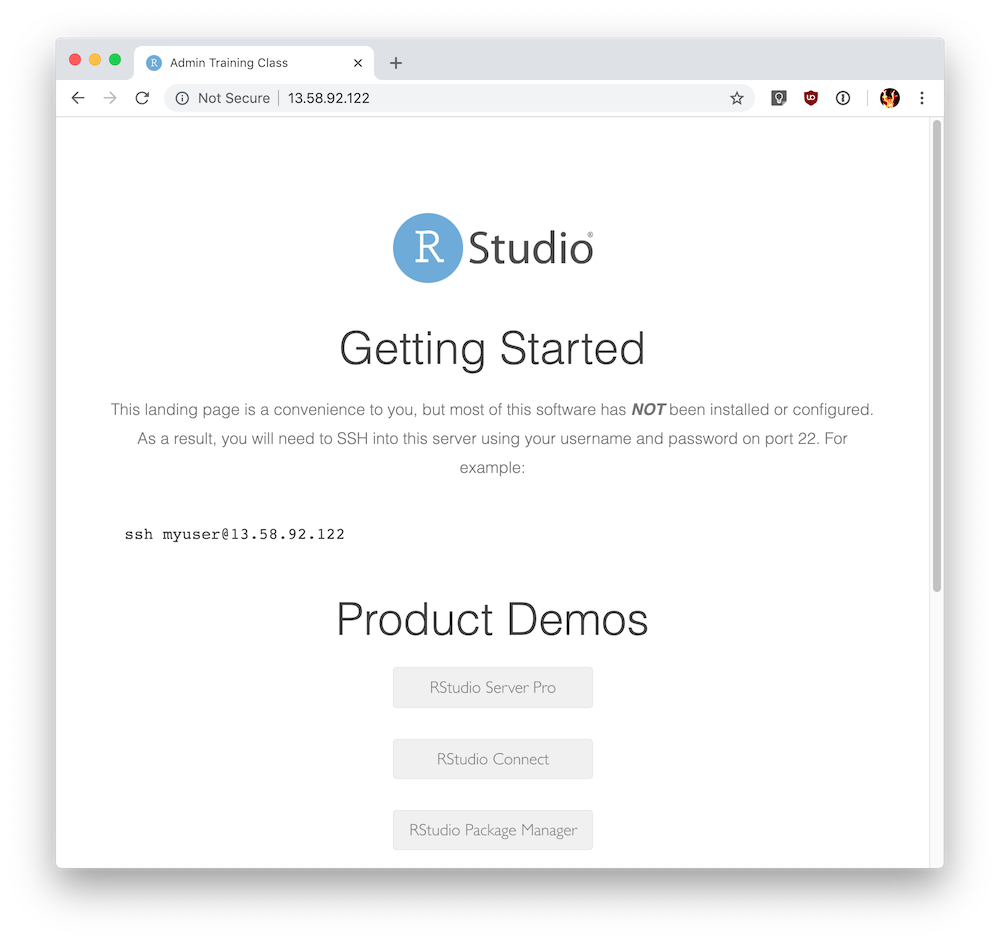

6.1 - Lab - Installing RStudio Package Manager
Overview
In this exercise, you:
- Install RStudio Package Manager
- Test the installation
- Run diagnostics
Refer to the RSPM Documentation throughout the exercises, specifically the Getting Started - Installation section.
Quiz: System requirements
Refer to the RStudio Package Manager documentation on installation pre-requisites, then answer the following questions:
Supported operating systems
What operating systems are supported for RStudio Package Manager?
- Windows Server 2018
- SUSE Linux
- Ubuntu Linux
- Debian Linux
- Fedora Linux
- Red Hat Linux
- CentOS Linux
Answer:
The correct operating systems are: Suse Linux, Ubuntu Linux, Red Hat Linux and CentOS
R requirements and version
What are the requirements for an installed version of R?
- A - RSPM will not serve packages without a valid installation of R
- B - RSPM requires a valid installation of R to build R packages from Git
- C - RSPM requires the same version of R to be installed to match the version of the end users
Answer:
B - RSPM requires a valid installation of R to build R packages from Git
What is the minimum R version that is supported on RSPM?
- R-3.0.0
- R-3.1.0
- R-3.2.0
- R-3.3.0
- R-3.4.0
- R-3.5.0
Answer:
R-3.0.0
Quiz: Server instance
Operating system
Before you start the installation on the server, you should note the operating system that you are using.
Hint: Run the following command on your server instance:
lsb_release -a
What operating system are you using on the training server?
- Ubuntu Linux 18.04
- Red Hat Enterprise Linux 7.5
- SUSE Linux Enterprise 12
Answer:
The training server is using Ubuntu Linux.
Task: Install RStudio Package Manager
Perform the following tasks on your course instance:
- Navigate to the RStudio Package Manager download page
- On your server instance, follow the documented steps to install RStudio Package Manager:
- Install the required dependency
- Download the RStudio Package Manager installer
- Install RStudio Package Manager
In the following exercise, you will test RSPM and ensure that it is installed correctly.
Task: Test the RSPM installation
How to know that RSPM installed successfully?
- Check the status of the RSPM service:
sudo systemctl status rstudio-pm
- Test the connection to the RSPM web interface by running the following command from your server instance:
curl localhost:4242/client/
Note:
This is helpful to verify prior to the following step in the event that you have network connectivity or firewall issues.
- Connect to the RSPM web interface in your browser by visiting the following URL:
http://{IP-ADDRESS}:4242
Note
You can connect to RSPM using the IP address or DNS name.
Note: There are no repositories configured by default, so it is normal to see a message that states there are No Repos Defined.

- We've also configured an optional proxy / landing page, which you can connect in your browser by visiting the following URL:
http://{IP-ADDRESS}
Then, to view the RSPM web interface, click on the RStudio Package Manager
link, or visit http://{IP-ADDRESS}/packages/ directly.
